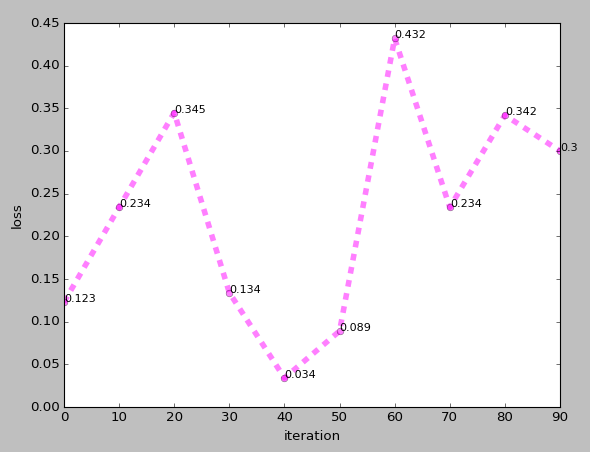
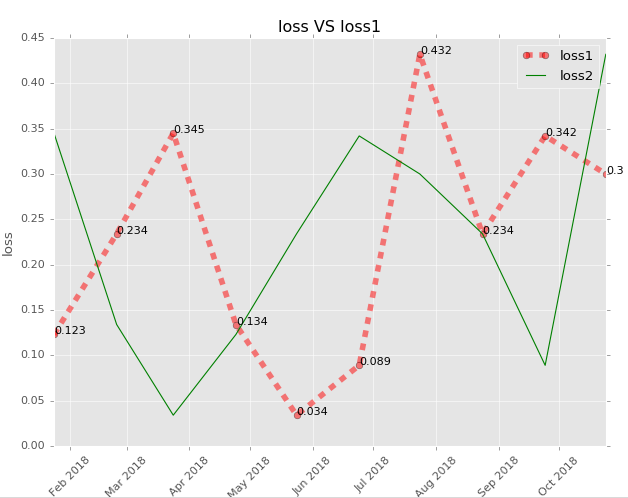

例子
1 | # -*- coding:utf-8 -*- |
结果：

坐标轴数据
ax.plot(x, y) 加入x、y坐标轴数据
线条名称(标签)
label : 给所绘制的曲线一个名字，此名字在图示/图例(legend)中显示plt.xlabel() plt.ylabel() 分别定义x/y坐标标签
线条颜色
线条颜色命名方式有三种：
- 英文全名， 如blue
- 缩写， 如b
- 16进制 ，如FF00FF
- (r, g, b) 或 (r, g, b, a)，如（1,0,1,1） ，其中 r g b a 取均为[0, 1]之间，[0, 1]之间的浮点数的字符串形式，表示灰度值。0表示黑色，1表示白色
使用：
plot方法的关键字参数color(或c)用来设置线的颜色。
如 ax.plot(iteration, loss, color='blue') 或 ax.plot(iteration, loss, c='blue')
还可以直接ax.plot(iteration, loss, 'r')指定颜色， 如例子
详细颜色参数：http://www.cnblogs.com/darkknightzh/p/6117528.html
线条形状
plot方法的关键字参数linestyle(或ls)用来设置线的样式。
如ax.plot(iteration, loss, linestyle=':') 或 ax.plot(iteration, loss, ls=':')
可取值为：'-' 实线(solid)'--' 短线(dashed)'-.' 短点相间线(dashdot)'：' 虚点线(dotted)'', ' ', None
线条大小
设置plot方法的关键字参数linewidth(或lw)可以改变线的粗细，其值为浮点数。
如例：plt.plot(x, y1, c=’r’, ls=’–’, lw=3)
折点样式
(1)marker – 折点形状
(2)markeredgecolor 或 mec – 折点外边颜色
(3)markeredgewidth 或 mew – 折点线宽
(4)markerfacecolor 或 mfc –折点实心颜色
(5)markerfacecoloralt 或 mfcalt
(6)markersize 或 ms –折点大小
折点形状选择:
================ ===============================
character description
================ ==============================='-' solid line style'--' dashed line style'-.' dash-dot line style':' dotted line style'.' point marker',' pixel marker'o' circle marker'v' triangle_down marker'^' triangle_up marker'<' triangle_left marker'>' triangle_right marker'1' tri_down marker'2' tri_up marker'3' tri_left marker'4' tri_right marker's' square marker'p' pentagon marker'*' star marker'h' hexagon1 marker'H' hexagon2 marker'+' plus marker'x' x marker'D' diamond marker'd' thin_diamond marker'|' vline marker'_' hline marker
================ ===============================
语法如以下例:
1 | plt.plot(x, y1, marker='o', mec='r', mfc='w') |
alpha线条透明度
alpha的值在[0,1]之间
1 | plt.plot(x,y1,ls='--',lw=4,c='b',alpha=0.5,label='total') |
显示纵坐标标签
使用plt.text(x, y, y) 如例子中：
1 | for x, y in zip(iteration, loss): |
例2
1 | # -*- coding:utf-8 -*- |
结果：

注意要把plt.xlim(0, 90)注释掉，不然会报错ValueError ordinal must be >= 1
情景：使用python的matplotlib画图时报错。
原因：matplotlibx轴数据找不到x轴对应地方 The error is due to matplotlib’s inability to find the location of x-axis value along the x-axis
解决：不同细节不同解决。我的是设置了xlim导致x轴找不到地方放数据
多个折线
通过多个plt.plot可以有多条折线，如上例2。
图例
在 方法plt.plot()的参数里加上label参数后，再后面执行plt.legend()可以直接显示折线的示例
图形的风格
使用plt.style.use('ggplot') 设置图形的风格，共有五种不同风格：bmh、ggplot、dark_background、fivethirtyeight和grayscale。
背景网格
普通plt.grid()设置，有设置图形风格时需要plt.grid(True)才能正常显示网格
横坐标刻度旋转
plt.xticks(rotation=45)设置横坐标刻度旋转45度
横坐标是时间
先引入from matplotlib.pylab import datestr2num，
再使用datestr2num()方法把时间字符串转成数字
最后使用方法plt.plot_date()代替plt.plot()方法显示时间
中文
python 2.7.12
使用label='中'.decode('utf-8') 保证不会中文不会报错，但是会是乱码；再使用plt.rcParams['font.sans-serif']=['SimHei']保证中文正确显示。
另外，中文报错还可以使用另一种方法解决：
1 | import sys |
参考：https://blog.csdn.net/helunqu2017/article/details/78629136
https://zhuanlan.zhihu.com/p/24675460